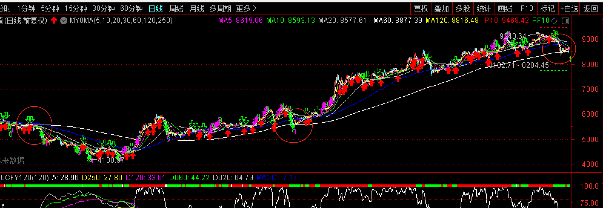

数据看盘
¶近期观察项
- 创业的走势
- 个股中报的情况
¶周数据看盘
¶2022.07.15
¶下周观察项：
- 创业的走势
- 个股中报的情况
¶指数：
- 宽指明确提现出一个小字。创业/上证150/中证1000/深圳，都在30日上震荡。行业上中游/工业稍好。宽指趋势稍好的是上证150和全指工业。
- 行业和个股更趋向报团。光伏、汽配和储能方向。
- 全市场15分钟、30分钟、60分钟热度无共振。
- 业绩预告开发发布，更多关注业绩较好的行业。等业绩都发布完可能是更好的选择。
¶2022.07.01
¶下周观察项：
- 无观察项目，涨跌看意志力了。(同上周)
¶指数：
- A50、汇率良好，大盘继续看多，但本周震荡的可能性更大。
- 除了中证100都出现了6天的缺口，没有补，15分钟、30分钟、60分钟市场趋势显示前半周不乐观。所以前半周的某一天可能会 V 一下，完成补缺口。
¶2022.06.24
¶下周观察项：
- 无观察项目，涨跌看意志力了。
¶指数：
- A50、汇率良好，大盘继续看多。
- 全 A、活筹都干上了年线，优于任何宽指，说明微盘股的活跃。市场的容错度将下降。
- 滞胀迹象已经出现。上证100，微盘股，创业，成长，三高，buff 叠的越多越好。
- 整个市场60日均线上和多头趋势均达到历史较高位水平，震荡将会成为下个月的主流。正好叠加半年报的发布期，被证伪的和半年持续受创的将率先掉队。
¶2022.06.17
¶下周观察项：
- 上证敢不敢上半年线，其实上了也没啥用。
- 食品饮料、药、5G 方向的补涨需求
¶指数：
- 上证被半年线压制。材料、可选、消费突破半年线，中下游优于上游。
- 宏观上由于中美利率政策的背离，导致中美国债利率差指标失效。但是本轮上涨是在人民币贬值的背景下进行行的，人民币在6.6元企稳后开始了逼空行情。适当关注汇率走势，可能有助于判断行情的走势。单看A50还可以继续刚一周。
- 行业方向上，食品饮料、药、5G 方向有补涨的需求。
- 预期指数将在60日和半年线直接维持一个震荡走势。
- 真正好起来的话，需要的条件太多了。中报是个坎，会议是个节点，利率和汇率可能会是下一次变换的主因。
¶2022.06.10
¶下周观察项：
- 关注一下券商和银行的走势
¶指数：
- 宽指看没啥问题，可以做多。行业的多空很明显，赛道优于价值，汽车可能会滞胀。
- 关注一下券商和银行的走势以及和赛道的共振情况来判断金融是补涨还是上涨的助力。
¶2022.06.02
¶下周观察项：
- 沪深300能否突破60日。
¶指数
- 有个很有意思的情况，就是上证上60日，大盘指数没有上60日。中小盘指数上60日，创业板没有上60日。那么显而易见是沪深300拖累了市场。下周沪深300的走势会成为一个关键点。涨跌都靠它了。困扰沪深300的问题就是量能不足。
- 无论是券商、地产、银行，还是单看宁德时代，阳关电源等个股，沪深300目前还不具备站稳60日的能力。
- 6月份在60日先附近震荡了，高位的行业要调调，没涨的要涨涨，低位的继续找底去了。关注刚刚动的半导体、软件方向，持续性啥的就不用想了。
¶2022.05.27
¶下周观察项：
- 无
¶指数
- 没啥可说了，跌破20日线减仓好了。
- 6月份会可能选择一下方向，最好的情况在60日线附近震荡。7、8月份等不及预期的中报。有啥事情9月份再说了。
- 做啥看自己喜欢，对错看缘。
¶2022.05.20
¶下周观察项：
- 金融会突突突上30日么？
¶指数
- 一日之间，大多数宽指都站上了30日，很多是半年以来的第一次。30日下面的还剩下价值，消费，医药和金融。
- 缺口补不补？是一个信心的问题。补上未必会好，不补未必会不好。现在说，补不补其实并不重要，只是在强迫症来说看起来是否完美。
- 切换了么？不知道，只能说赛道暖起来了。毕竟他们足够低，当日现在也不算太低了。
- 指标股，前前前前前期的人气股可以纳入标的了。
- 否极泰来，一拓而就是不太可能的，找对自己的节奏就对了。该补的补，该换的换。
¶2022.05.13
¶下周观察项：
- 三大指数能否突破30日线压制
- 成长、可选、服务、公用方向的持续性
¶指数
- 指数稳了，修复已经完成，三大指数将再次面临30日均线的考验。能否站稳是个问题，毕竟反弹有一定的高度。预期会在这个位置震荡一段时间。轮流释放获利的压力。
- 普反导致指数的失真，疫情依然是最大的不确定性，具体怎么在市场上反馈，还是未知的。最近1~2周的行情会比较纠结。
- 复产复工的预期叠加超跌，关注新能源车、光伏、绿电等赛道方向。成长方向的汽车的持续性，会带领指数突破，只是时间的问题。
¶2022.05.06
¶下周观察项：
- 全 A 等权（880008）是否企稳并维持在5日均线之上
¶市场及其他
本周就2个交易日，大方向维持不变。五月份预期是一个震荡反弹的过程，可以积极做多。指数上，小盘稍微好一些，整体上继续关注全 A 等权的企稳。重个股、轻指数。
¶2022.04.29
¶下周观察项：
- 全 A 等权（880008）是否企稳并维持在5日均线之上
¶市场及其他
本周是被噪音严重干扰的一周，周一、周三、周五的大幅波动都是因为外部因素。整体上还是震荡筑底的过程。唯一值得欣慰的是，市场上并不缺钱，很容易的就能放量到9000亿，这个量其实依然是多头的存量。
经过周一的千股跌停，行业趋势看起来比上周更糟糕，不过不用过分担心，毕竟趋势比情绪要来的晚一些。宽指上唯一的好消息是东方财富站上60日均线，当然，反复也是必然要经历的。
几天的假期存在各种的变数：4月 PMI 发布，人民币/日元的汇率，中美十年国债利差，德左和波兰演习，中概股以及亚太周边都是潜在的利空；上海/北京的疫情以及被影响的假期出行则是喜忧参半。毕竟，这些也都是噪音，有些可能会大一些而已。
预期下周大概率会先抑后扬，依然会维持在筑底的形态，等待10日均线下来。这个筑底的过程或许会维持在整个5月。谨慎看多。
¶2022.04.22
¶下周观察项
- 券商/银行何时拉大盘。
- 成交量恢复到9000亿
¶市场及其他
一周下来宽指和概念在趋势上没有任何多头的，行业仅仅剩下火电、啤酒、公路，放到一起也没有100支票。
好消息是从15分钟的趋势看，至暗时刻已经过去了。
坏消息是周末需要关注的外盘信息点太多了。比如：中美十年利率、人民币汇率、俄乌是否升级、上海复工的进度。任何一点的变化都有可能在锤一下。
整体上下周可以看多了，没什么利好，只不过是跌多而已。整体上也不要乐观，毕竟市场上资金量不够，在空仓一周也不会踏空什么，或者下周反弹的时候先减减，毕竟下下周发布 PMI的时候，可能还要在锤一下。
¶2022.04.15
¶下周观察项
建议：关注指标股+建筑/银行/能源+大盘/红利/价值，保平争胜，高抛低吸。
¶宽指：
下周和本周观察项一致：
- 重点关注中证100、沪深300、红利指数、大盘价值、低市盈率、低市净率
- 其他的可以不用看了。
¶行业：
- 建筑地产方向：地产、基建、银行、建材/水泥/管网/钢材。
- 能源方向：煤炭/石油、
- 必选消费方向
¶其他：
可以对标到2018年9月14日（周五）这一周的样子，至少从几个技术指标上看有很高的相似性。如果完全复刻的话，还有5个月才能转多，那就是10月份的也是，差不都就是开会的时候。感觉周期上会缩短在2~3个月的周期。可以关注几个条件：①上海的社会面清零进度；②马里乌波尔钢铁厂攻克前后是否有升级迹象以及神秘东方大国什么时候下场；③中美10年国债利差何时不在倒挂。
¶2022.04.08
¶下周观察项
建议：关注指标股+建筑/银行/能源+大盘/红利/价值，保平争胜，高抛低吸。
¶宽指：
- 重点关注上证50、沪深300、红利指数、大盘价值。
- 其他的可以不用看了。
¶行业：
- 重点关注建筑地产方向：地产、基建、银行、建材/水泥/管网/钢材。
- 重点关注能源方向：煤炭/石油、
¶2022.04.01
¶下周观察项
- [ ] 000992全指金融、399377小盘价值、000015红利指数的量价配合情况
- [ ] 创业指数日线能否站上30日均线
建议：关注大盘指标和小盘价值
¶宽指：
- 本周周一快速回补缺口后，在金融的带领下，宽指走出了指数修复的行情。上证50、中证100已经率先企稳，大部分宽指日线都突破20日均线。
- 创业在30日均线下已经12天。一个突破压制长阳可能会随时出现，但也不要对突破后有什么过高的预期。
- 目前指数上没有大风险，整体上向好，大概率是进一退一或者进一退二。较好的情况是在30日均线附近震荡，等待60日均线的下行粘合。
¶行业/概念：
- 市场选择的银行和煤炭超过很多人的预料，进而带动了价值和红利方向的多头趋势。在概念快速轮动的情况下，这个方向的指标股会是不错的选择。
- 地产低位的首板在周五出现了很多，地产方向可以向上下游延伸。
- 商业银行可能会有不错的标的出现。如果没有，指数的风险会变大。
¶2022.03.25
¶下周观察项
- [ ] 000991全指医药量价配合，能否突破60日均线
- [ ] 931775 房地产的量价配合和持续性
建议：观望为主，地产、医药板块看高作低，有耐心、莫追高。
¶宽指：
- 本周创业指数30日均线压制一周、周五的宽指单边下跌和概念快速轮动逐渐消耗了多头的信心。本来不必要回补的强支撑缺口变成必要回补的缺口来消除空头的犹豫。
- 继续等待创业的一个长阳来突破30日的均线压制，没有的话，那一切都将是镜花水月。
- 好消息是今后两周大概率会构筑双底，坏消息是主要宽指300和1000的中线已经进入阶段阶低位，趋势18年化已经初步形成，类比到18年5月~6月的样子。提前做好逆势的打算。
¶行业/概念
- 地产/医药是唯一能持续操作的板块，跷跷板效应是不可避免的。看高做低，有耐心，莫追高。
- 地产已经突破60日均线，不排除下周创新高的可能
¶2022.03.18
¶下周观察项
- [ ] 000991的量价配合，是否有回调迹象
- [ ] 931775 房地产的量价配合和持续性
- [ ] 沪深300的走向
建议：谨慎看多，过程会多有反复，此消彼长，一步错，步步错。
¶宽指：
- 本周后三天在券商带动下的缩量上涨可能会酝酿这一次放量。再往前每上升一步都面临获利盘和止损盘的双重压力。稍有风吹草动脆弱的市场就会犹豫，宽指指标股可能会是稳妥中庸的选择。
- 到三月底会在这个位置反复震荡。至少政策面现在不支持下跌，后面是反复、反弹、反转，边走边看，现在无从判断，但是没有增量是不争的事实。
- 沪深300指标股，大中盘成长方向指标股，依然是不错的标的。
¶行业/概念：
- 全指医药周四放量，继续观察其量价配合，还能持续走下去动力不在会是疫情线了。毕竟天气转暖，感冒的人也少了。NMN可能会带动维生素、代糖、幽门螺旋杆菌这条健康逻辑。
- 房地产周五放量，下周会分流一部分资金。在叠加装配建筑、BIPV，又会向中游、工业、赛道方向发散。
- 疫情反转和券商埋伏一下也不会有大错。
¶2022.03.11
¶下周观察项
- [ ] 000911的量价配合和持续性
- [ ] 沪深300的反弹力度
操作建议：预期弱反弹的一周，可积极做多。大盘成长或医药方向。
¶宽指
- 本周如期下跌，力度有些超预期，周三的放量下跌后 V 回和周五的券商护盘拉升可以初步确认短期的底部形成，下周可适当积极做多，但下跌趋势并未改变。
- 下周行情会两级分化，大盘指标股和热门概念均有概率拉升，极大概率形成共振。绝大多数标的会跟跌不跟涨。
- 沪深300指标会率先企稳，适当关注大中盘成长方向指标股。
¶行业/概念
- 由于疫情规模的扩散，疫情概念前半周应该不会太差。
- 具有大盘、工业、成长属性新型电力和光伏可适当关注。
- 下游、成长、创业、消费/可选方向依然聚集在医药和医药连锁上。
- 叠加建筑和 BIPV 概念的标的会有些额外的加分
¶2022.03.04
¶下周观察项
- [x] 880001/880007 5日线何时下穿年线？（下穿）
- [x] 中证500/上证380能否保持一线生机？（跌破）
- [x] 中证1000/国证2000的反弹能否企稳，延续反弹？（跌破）
操作建议：重强势个股，谨慎接力，轻指数、轻行业，空仓也没什么毛病，等待做多情绪的出现。
¶宽指
- 880001/880007，从技术面上看3月4日的下跌，改变反弹趋势，60日线距离下穿120日线仅20点，也就是1天普跌的样子。下周前两天大概率回撤年线，随后在年线附近徘徊。历年两会期间指数没有明显的护盘行为，下周大概率会跌破年线，60日线下穿120日线，所有的均线下行近一步接近年线。跌破年线的趋势已经形成，整个3月份会确定全年走势的初步基调。4-5月份是反弹还是技术性空头延续，可以参考2018年3月、20年3月和21年3月的走势。
- 沪深300周线这周跌破60日均线，收5日线下，下周预计10日线下穿60日线。后市持续下跌趋势上已经不可避免。中证1000反弹趋势终止，5日线已经掉头向下。
- 本周两市的上证还能维持横盘，深圳则开始新一轮下跌。下周机会维持在上证380和中证500的中盘规模以及非宽指的小盘股。
¶行业/概念
- 行业由于俄乌战争，周末仅剩下上游/服务/公用/能源/地产还维持者机会（风险），这部分主要还是冲突受益（矿/船/港/煤）和稳增长的预期，注意新冠、两会、俄乌冲突的获利了结及地产产业链的可能的机会。
- 风格：成长 > 价值
- 从对俄罗斯被制裁角度看，自主可控和国产替代能否在两会期间成为数字新基建的机会，物联网应用 > 5G > 国产软件 > 芯片。
¶2022.02.25
¶下周观察项
- [x] 880001/880007 5日线何时是否下穿年线或上穿30日线？（跌破）
- [x] 沪深300能否企稳？（跌破）
- [x] 中证1000的反弹能否延续？能否突破60日均线。（下跌）
操作建议：中小盘，行业轮动。
¶宽指
-
值得关注的宽指(880001/880007)，连续3周在年线上方震荡，周线连续4周在60日线上方，上次出现的时候还是2018年，2018年18周后有效跌破。关注指数的5日线走势，如果下穿年线有可能是全市场真正进入下跌趋势的开始。

-
规模：小盘 > 中盘 > 大盘
- 深圳700，上证380，上证150，中证500，中证1000
-
行业：工业、医药、信息 > 通信、能源、材料、公用 > 可选、消费、金融、地产
-
风格：成长 > 红利 > 价值
¶行业
短线行业关注：医药类、装备制造、小金属